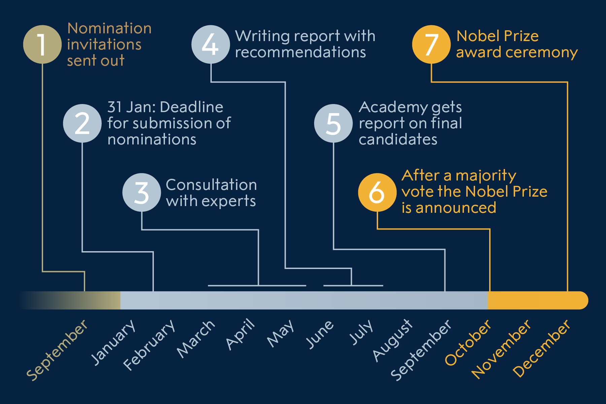

Nomination and selection of physics laureates
Nomination to the Nobel Prize in Physics is by invitation only. The names of the nominees and other information about the nominations cannot be revealed until 50 years later.
Process of nomination and selection
The Nobel Committee for Physics sends confidential forms to persons who are competent and qualified to nominate.
Qualified nominators
The right to submit proposals for the award of a Nobel Prize in Physics shall, by statute, be enjoyed by:
- Swedish and foreign members of the Royal Swedish Academy of Sciences;
- Members of the Nobel Committees for Physics;
- Nobel Prize laureates in physics;
- Tenured professors in the Physical sciences at the universities and institutes of technology of Sweden, Denmark, Finland, Iceland and Norway, and Karolinska Institutet, Stockholm;
- Holders of corresponding chairs in at least six universities or university colleges (normally, hundreds of universities) selected by the Academy of Sciences with a view to ensuring the appropriate distribution over the different countries and their seats of learning;
- Other scientists from whom the Academy may see fit to invite proposals.
Decisions as to the selection of the scientific scholars referred to in paragraphs 5 and 6 above shall be taken each year before the end of the month of September.
Selection of Nobel Prize laureates
The Royal Swedish Academy of Sciences is responsible for the selection of the Nobel Prize laureates in physics. The Academy appoints a working body, the Nobel Committee for Physics, which screens the nominations and presents a proposal for final candidates. The committee consists nominally of five voting members, but since many years, it also includes voting adjunct members. The Committee’s proposal is discussed in a larger body, the Physics Class of the Academy, who may suggest a modification or forward a different proposal to the Academy. Finally, additional proposals may be raised at the final Academy meeting. It is in principle possible to suggest that no Prize be given the current year, but that is a seldom used choice.
Who is eligible for the Nobel Prize in Physics?
The candidates eligible for the Physics Prize are those nominated by qualified persons who have received an invitation from the Nobel Committee to submit names for consideration. No one can nominate himself or herself.
How are the Nobel Prize laureates selected?
The nomination process for Nobel Prize laureates in physics Ill. N. ElmehedBelow is a brief description of the process involved in selecting the Nobel Prize laureates in physics.
September – Nomination forms are sent out. The Nobel Committee sends out confidential forms to around 3,000 people — selected professors at universities around the world, Nobel Prize laureates in physics and chemistry, and members of the Royal Swedish Academy of Sciences, among others.
February – Deadline for submission of nominations. The completed nomination forms must reach the Nobel Committee no later than 31 January of the following year. The Committee screens the nominations and selects the preliminary candidates. About 250–350 scientists are nominated as several nominators often submit the same name.
March-May – Consultation with experts. The Nobel Committee sends the names of the preliminary candidates to specially appointed experts for their assessment of the candidates’ work.
June-August – Writing of the report. The Nobel Committee puts together the report with recommendations to be submitted to the Academy. The report is signed by all members of the Committee.
September – Committee submits recommendations. The Nobel Committee submits its report with recommendations on the final candidates to the members of the Academy. The report is discussed at two meetings of the Physics Class of the Academy.
October – Nobel Prize laureates are chosen. In early October, the Academy selects the Nobel Prize laureates in physics through a majority vote. The decision is final and without appeal. The names of the Nobel Laureates are then announced.
December – Nobel Prize laureates receive their Prize. The Nobel Prize award ceremony takes place on 10 December in Stockholm, where the Nobel Prize laureates receive their Nobel Prize, which consists of a Nobel Prize medal and diploma, and a document confirming the prize amount.
Are the nominations made public?
The statutes of the Nobel Foundation restrict disclosure of information about the nominations, whether publicly or privately, for 50 years. The restriction concerns the nominees and nominators, as well as investigations and opinions related to the award of a prize.
Read more about how the Nobel Prize laureates are nominated:
Nomination of the physics laureatesNomination of the chemistry laureates
Nomination of the medicine laureates
Nomination of the literature laureates
Nomination of the peace laureates